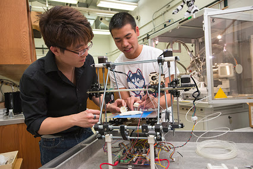

The Foundations of Engineering and Technology is the introductory course for the Engineering and
Technology Education pathways. This STEM driven course provides the students with an overview
of engineering and technology including the different methods used in the engineering design
process developing fundamental technology and engineering literacy. Students will demonstrate the
skills and knowledge they have learned through various project based activities while using an
engineering design process to successfully master the “E” in STEM. The pre-requisite for this course
is advisor approval.
Engineering Concepts is second course in the engineering pathway. This course introduces students to the fundamental principles of engineering. Students learn about areas of specialization within engineering and engineering design, and apply engineering tools and procedures as they complete hands-on instructional activities. In addition Students will describe the history and characteristics of engineering disciplines.
students will demonstrate the engineering design process, students will solve problems using basic engineering tools and resources, and students will demonstrate a whole systems approach to engineering andproblem solving.
Engineering Applications is the third course in the engineering pathway. Students have
opportunities to apply engineering design as they develop a solution for a technological
problem. Students use applications of mathematics and science to predict the success of an
engineered solution and complete hands-on activities with tools, materials, and processes as
they develop working drawings and prototypes. Students that complete the pathway of courses
take the End of Pathway test, a standardized test that demonstrates mastery of the key
concepts of engineering.

The Diploma Programme for the IB Design Technology SL course is best suited for students interested in engineering, design, business, or entrepreneurship. Design Technology involves gaining information about the world around us, processing it, and then using it to form a strategy that will improve a given situation or product. It provides students with the knowledge to be able to design and make in school workshops, and also to develop an informed literacy about technology in general.The designer is interested in not only the material environment but also the political, social, and economic considerations which affect people’s priorities. Students learn how to evaluate existing products and analyze situations so that they can suggest appropriate improvements.
Research, Design, and Project Management is the fourth course in the engineering pathway. This course provides students with opportunities to work with students from other pathways as a member of a design team. Research strategies, prototype testing and evaluation, and communication skills are emphasized. Students will become proficient in the formal research techniques necessary to understand a technical problem.
Students will use research techniques to develop a design solution for to a technological problem, students will utilize research techniques to test and evaluate designed prototypes, and students will effectively communicate research findings.